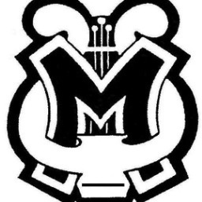

3D Models
Music Department Logo Variations
Psychedelic Variation

While I was in marching and concert band, I modeled a 3D version of our music department's logo from an ink drawing. I'm not sure who to attribute the drawing to, but I believe it was the work of Greg Schwaegler.
I was learning how to use post-processing nodes when I got a killer effect. I tuned it a bit and proudly showed it to my teacher, since it gave me the feeling of sound coming towards the viewer.
I had fun also experimenting with the type for the marching band name.
Superhero Variation

My senior year show featured superheroes, so I challenged myself to synthesize the logo and the Superman logo. This was my best clothsim render.
Cover Image Variations


The dark version was meant to serve as a cover image for our social media. The lighter version came first, and was born of the joy of tutorials; a yellow light to one side and a blue light to another made this look stunningly realistic to me. On further review, it looked pretty crusty, so I went for a studio-lit look, which you see here.
Check out the animation on Sketchfab, and you can view the same renders as above on my ArtStation.